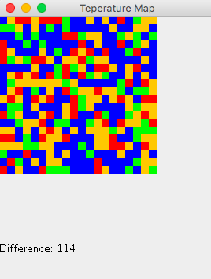

Remember not to create packages. Use the default package
8A
Write a class Rectangles which manages an array of Rectangle objects.
The constructor of the Rectangles takes an array of Rectangle objects. You can assume the array is filled
Provide these methods
averageArea method that returns the average area of the Rectangle objects in the array. Only divide one timeswapMaxAndMin which swaps the Rectangle with the largest area with the one with the smallest area in the array. Only use one looptoString which returns the string representation of the underlying array. (You can use Arrays.toString)Provide javadoc
8B
You are going to to work with a partially filled array in this problem. Write a class to manage an array of Strings. Call the class WordProcessor. WordProcessor constructor takes no parameters but initializes the array so it can hold 8 elements. Define a constant for 8, perhaps INITIAL_CAPACITY.
Provide methods:
public void add(String toAdd) adds the given string at the end of the partially filled array. public void add(String toAdd, int index) adds the String at the specified index. Grow the array by doubling its size if necessary and then add the elementpublic void removeAdjacentDuplicates() If elements at adjacent indexes are equal, remove oneprivate void growIfNeeded() checks to see if the array is full. If it is, it doubles the size of the array and copies the elements to a the new array in the same order.public String toString() returns a string representation of the array. The string starts with "[" and ends with "]" The elements of the array are separated by commas. There should be no comma at the beginning or end of the list.8C
For this problem you will create a crude temperature map. A TemperatureMap class indicates areas of different temperature by the use of different colors. Our map will represent a square area. The temperatures are contained in a 2d int array. Each element in the array represents the temperature in a square area 20 miles on a side. We assume the temperature is the same through-out the area.
The constructor takes a 2d array of ints as a parameter
Provide these methods:
public void drawMap(Graphics2D g2) creates a map consisting of colored squares. Each square represents the temperature indicated by an element in the array. There is a one-to-one correspondence between the array elements and the squares on the map. The upper left hand corner of the map is at (0, 0). The squares are 10 px X 10 px. Draw the rows and then the columns. Use the Graphics2d Rectangle method - not fillRectpublic int maxDifference() gets the difference between the highest and lowest points in the map as a positive number.The map will look like this
